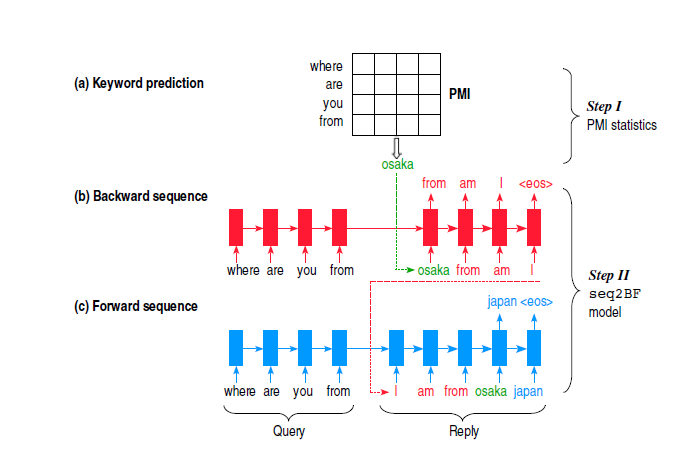
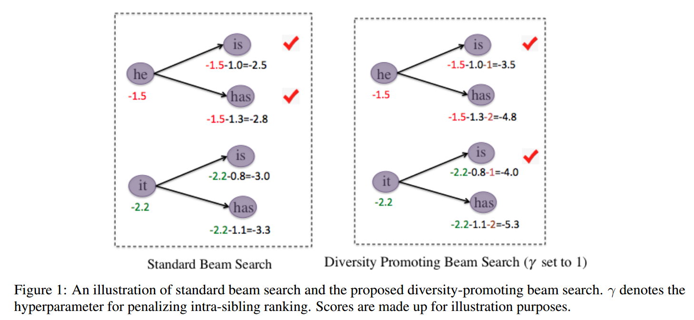
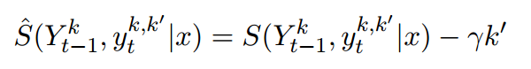
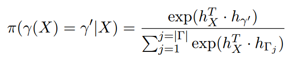
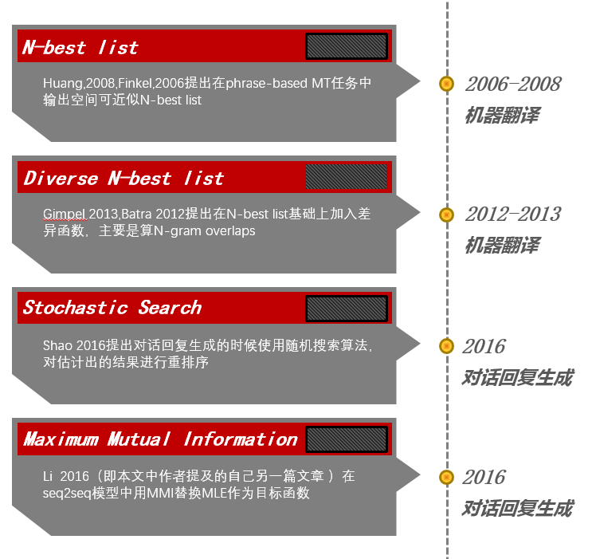
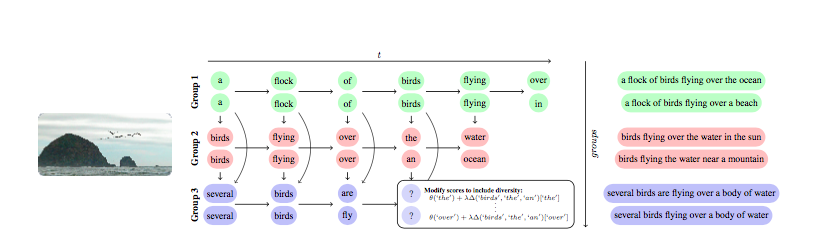
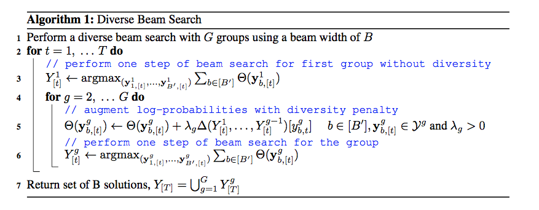

PaperWeekly 第十八期
引言
对话系统是当前的研究热点，也是风险投资的热点，从2016年初开始，成立了无数家做chatbot、语音助手等类似产品的公司，不管是对用户的，还是对企业的，将对话系统这一应用推到了一个新的高度。seq2seq是当前流行的算法框架，给定一个输入，模型自动给出一个不错的输出，听起来都是一件美好的事情。seq2seq在对话系统中的研究比较多，本期PaperWeekly分享4篇非常新的paper notes，涉及到如何提高所生成对话的流畅度和多样性，使得对话系统能够更加接近人类的对话。4篇paper如下：
1、Sequence to Backward and Forward Sequences: A Content-Introducing Approach to Generative Short-Text Conversation, 2016
2、A Simple, Fast Diverse Decoding Algorithm for Neural Generation, 2016
3、DIVERSE BEAM SEARCH: DECODING DIVERSE SOLUTIONS FROM NEURAL SEQUENCE MODELS, 2016
4、A Diversity-Promoting Objective Function for Neural Conversation Models, 2015
Sequence to Backward and Forward Sequences: A Content-Introducing Approach to Generative Short-Text Conversation
作者
Lili Mou, Yiping Song, Rui Yan, Ge Li, Lu Zhang, Zhi Jin
单位
Key Laboratory of High Confidence Software Technologies (Peking University), MoE, China
Institute of Software, Peking University, China
Institute of Network Computing and Information Systems, Peking Univerity, China
Institute of Computer Science and Technology, Peking University, China
关键词
content-introducing approach
neural network-based
generative dialogue systems
seq2BF
文章来源
arXiv, 2016
问题
使用引入内容方法，用于处理基于神经网络的生成式对话系统
模型

该模型由两部分组成：
1、use PMI to predict a keyword for the reply
使用逐点互信息(PMI)进行预测，选取PMI值最大的单词作为回答中的关键词，该关键词可以出现在回答语句中的任意位置。
2、generate a reply conditioned on the keyword as well as the query
使用sequence to backward and forward sequences(seq2BF)模型来生成包含关键词的回答。以该关键词为基点，将回答语句划分为两个序列：
(1) 反向序列：关键词左侧的所有单词以逆序排列
(2) 正向序列：关键词右侧的所有单词以顺序排列
seq2BF模型具体工作如下：
(1) 使用seq2seq神经网络将问题编码，仅对关键词左侧的单词进行解码，逆序输出每个单词
(2) 使用另一个seq2seq模型将问题再次编码，在给定上步中解码后的逆序单词序列下，对回答中的剩余单词进行顺序解码，输出最终单词序列
资源
Dataset：http://tieba.baidu.com
相关工作
1、 Dialogue Systems
(1) (Isbell et al., 2000; Wang et al., 2013) retrieval methods
(2) (Ritter et al., 2011) phrase-based machine translation
(3) (Sordoni et al., 2015; Shang et al., 2015) recurrent neural networks
2、 Neural Networks for Sentence Generation
(1) (Sordoni et al., 2015) bag-of-words features
(2) (Shang et al., 2015) seq2seq-like neural networks
(3) (Yao et al., 2015; Serban et al., 2016a) design hierarchical neural networks
(4) (Li et al., 2016a) mutual information training objective
简评
本文的创新点在于，不同与目前普遍存在的从句首到句尾顺序生成目标单词的方法，引入逐点互信息方法来预测回答语句中的关键词，使用seq2BF机制确保该关键词可以出现在目标回答语句的任意位置之中并确保输出的流利度，相比于seq2seq的生成方法显著地提升了对话系统的质量。
A Simple, Fast Diverse Decoding Algorithm for Neural Generation
作者
Jiwei Li, Will Monroe and Dan Jurafsky
单位
Stanford
关键词
seq2seq, diversity, RL
文章来源
arXiv, 2016
问题
seq2seq模型decoder时改进beam search，引入惩罚因子影响排序结果，并加入强化学习模型来自动学习diversity rate，使得解码出的结果更具多样性
模型

对比标准beam search，本模型引入惩罚因子，公式如下

其中$\gamma$称为diversity rate，k’范围为[1,k]，K为beam size
强化学习模型中，策略为

reward为评价指标，例如机器翻译中的BLEU值等
资源
1、回复生成实验数据集：OpenSubtitles https://github.com/jiweil/mutual-information-for-neural-machine-translation
（代码模型可从作者另外一篇文章的源码稍加改动）
2、机器翻译数据集：WMT’14 http://www.statmt.org/wmt13/translation-task.html
相关工作

简评
本模型的创新点在于引入惩罚因子，使得decoder时对standard beam search算法进行重排序，并引入强化学习模型，自动学习diversity rate。作者分别在三个实验上进行验证，机器翻译、摘要抽取与对话回复生成，实验表明在不同的实验上有不同的表现，但是总体而言本方法能够在一定程度上解码出更具有多样性的句子。（思路简明清晰，对于传统的beam search稍加改动，原文中作者提到在Matlab代码中只改动一行即可）
DIVERSE BEAM SEARCH: DECODING DIVERSE SOLUTIONS FROM NEURAL SEQUENCE MODELS
作者
Ashwin K Vijayakumar, Michael Cogswell, Ramprasath R. Selvaraju, Qing Sun1 Stefan Lee, David Crandall & Dhruv Batra
单位
Virginia Tech, Blacksburg, VA, USA
Indiana University, Bloomington, IN, USA
关键词
Beam Search; Diversity; Image Caption; Machine Translation; Visual Question Answer; Chatbot
文章来源
arXiv, 2016.10
问题
如何改进beam search解码算法，使其在seq2seq模型中可以生成更加丰富的结果？
模型
经典的beam search算法以最大后验概率作为优化目标函数，每一个time step只保留B个最优的状态，是一种典型的贪心算法，这个经典算法常常被用于解码可选状态数量多的情形，比如生成对话、生成图片描述、机器翻译等，每一步都有词表大小的可选状态集。seq2seq模型的流行，让这种解码算法的研究变得热门。在生成对话任务时，用经典的beam search会生成类似“我不知道”等这种没有营养的对话，虽然没有语法上的错误，而且可能在一定的评价体系内会得到不错的分数，但实际应用效果太差，因此diversity的研究变得热门。
本文针对diversity的问题，提出了一种改进版的beam search算法，旨在生成更加多样性的话。

新算法的主要思路是将经典算法中的Beam进行分组，通过引入一个惩罚机制，使得每一组的相似度尽量低，这一项保证了生成的话相互之间差异更大一些，即满足了多样性的需求，在每一组Beam中，用经典的算法进行优化搜索。具体的算法流程如下图：

实验中，用了Image Caption、Machine Translation和VQA三个任务进行了对比，验证了本文算法的有效性，并且对算法中的几个参数进行了敏感度分析，分析了分组数对多样性的影响。
资源
1、本文算法torch实现 https://github.com/ashwinkalyan/dbs
2、本文在线demo dbs.cloudcv.org
3、neuraltalk2实现 https://github.com/karpathy/neuraltalk2
4、机器翻译开源实现dl4mt https://github.com/nyu-dl/dl4mt-tutorial
相关工作
相关的工作主要分类两类：
1、Diverse M-Best Lists
2、Diverse Decoding for RNNs
之前Jiwei Li将解码算法的目标函数换成了互信息进行优化解码，对diversity进行了研究。
简评
本文研究的问题是一类基础问题，beam search算法作为一种经典的近似解码算法，应用的场景非常多。但在实际应用中，尤其是具体到生成对话、生成答案等任务上，存在一些适应性的问题，比如diversity。只是生成简单而又安全的话对于实际应用没有太多的意义，所以本文的研究非常有意义。本文的实验从三个不同的任务上对改进后的beam search都做了对比验证，非常扎实的结果验证了算法的有效性，并且对几个关键参数进行了敏感度分析，有理有据。同时在github上开源了代码，并且给出了一个在线demo。在评价方面，不仅仅设计了几个自动评价指标，而且用了人工评价的方法对本文算法进行了验证，是一篇非常好的paper，值得学习。
A Diversity-Promoting Objective Function for Neural Conversation Models
作者
Jiwei Li, Michel Galley, Chris Brockett, Jianfeng Gao, Bill Dolan
单位
Stanford University, Stanford, CA, USA
Microsoft Research, Redmond, WA, USA
关键词
Sequence-to-sequence neural network models, conversational responses, Maximum Mutual Information(MMI)
文章来源
arXiv, 2015
问题
使用MMI训练sequence-to-sequence model for conversational responses generation
传统的ML(最大似然估计)在训练sequence-to-sequence model的时候，易产生与输入无关的’safe’ responses(最大似然估计的弊病—-always try to cover all mode of input data)
作者通过使用MMI, 最大化输入与输出的互信息，能够有效避免与输入无关的responses，得到更为diverse的responses.
模型
MMI最早在speech recognition中提出并应用(discriminative training criteria). 语音识别中，通常先用ML训练声学模型，然后再接MMI和语言模型，对声学模型进一步调优。
在本文中，作者通过提出MMI用于seq-to-seq model的优化。作者提出了MMI-antiLM和MMI-bidi 两个不同的MMI的formulations. MMI在seq-to-seq的应用中存在decoding的问题。
MMI-antiLM中，作者通过使用带有权重的LM以生成更为diverse的responses by penalizing first word。
MMI-bidi中，搜索空间的数目过大，导致expolring所有的可能性在实际中无法实现。作者首先产生N-best list, 然后根据相应的准则函数 re-rank得到的N-best list。
在MMI不同的formulation中，作者通过启发式的设计，使得decoding更为容易且产生的response更为diverse，在相关的数据集上取得了较好的BLEU且产生的response更为diverse。
简评
最大后验概率通常作为优化的目标函数，但很多应用场景中得到的结果并不理想。本文采用了一个新的而且也是其他领域中比较常见的目标函数来替换最大后验概率，在生成对话时得到了更加丰富的结果。
总结
对话系统是一个相对高级的、综合性很强的任务，所依赖的基础任务比较多，比如分词、命名实体识别、句法分析、语义角色标注等等。对于规范的中文表达而言，句法分析仍是一个没有解决好的问题，更何况是不那么规范的人话，句法分析的准确性又要下一个level了，随之语义角色标注也得不到好的效果。经典的、基础的任务还有很长的路要走，对话系统这种更难、更复杂的任务相信不是一年、两年就可以突破的事情，虽然现在大热，做的人很多，但就目前的研究水平来看，应该还有很长的路要走。seq2seq是个逃避这些问题的好方法和好思路，但相对来说更加不成熟，而且存在着很多的问题，想通过大量的数据来覆盖所有的问题，是一种不太科学的思路。我想，seq2seq是个好方法，但传统的NLP方法也是必不可少的，而且两者应该是相互补充的。越多的人关注对话系统，就会越快地推动这个领域的发展，希望早日看到靠谱的、成熟的解决方案。感谢@Penny、@tonya、@zhangjun和@皓天 四位童鞋完成的paper notes。